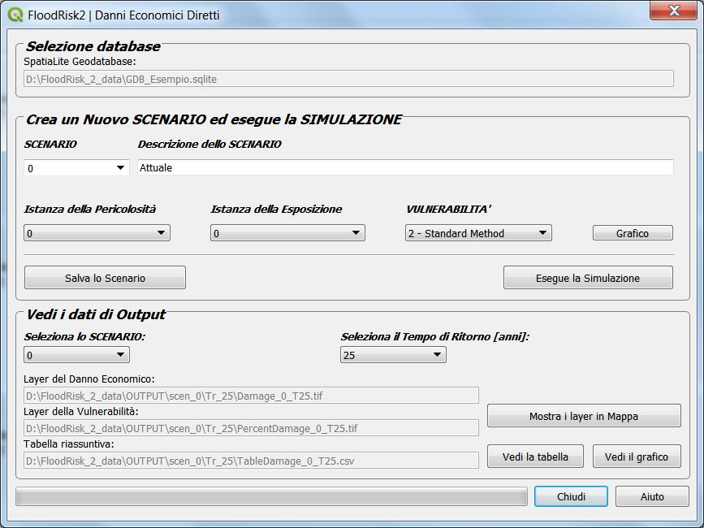

Danni Economici Diretti¶
La finestra Danni Economici Diretti consente di stimare il danno economico diretto atteso per le strutture e per il contenuto dei beni a rishio.

Siccome il plug-in consente di valutare diverse istanze sia per la pericolosità che per l’esposizone, ogni calcolo deve essere riferito ad una combinazione dei due, che chiamiamo scenario. Per esempio lo scenario della situazione corrente, detto “SCENARIO 0”, è la combinazione della “istanza 0” della pericolosità con l’”istanza 0” dell’esposizone. La definizione dello scenario è completata mediante la scelta, tramite il combobox “VULNERABILITA’”, del tipo di curve di vulnerabilità da adottare per il calcolo.
Inoltre, siccome per ogni pericolosità ci sono differento tempi di ritorno, il plug-in ricorsivamente esegue il calcolo per ogni tempo di ritorno. Nella parte bassa dell’interfaccia è possible scegliere ad uno ad uno i singoli tempi di ritorno di cui che si vogliono visualizzare in mappa i risultati.
Riassumendo, scelto uno SCENARIO, i dati utilizzati sono i seguenti:
Dati sui beni a rischio e la loro vulnerabilità (depth-damage curves) salvati nel geodatabase.
Dati concernenti la pericolosità sono mappe delle massime altezze d’acqua dovute all’inondazione (una per ogni tempo di ritorno). Questi dati sono l’output di un modello idraulico 2D e sono caricati nel sistema sotto forma di file del tipo GDAL Raster Formats
Il database può contenere differenti dipi di curve altezza-danno: prima di eseguire il calcolo occorre scegliere il tipo di VULNERABILITA’ fra quelle disponibili ed è possibile visionare il Grafico.
I risultati sono mappe di danno e vulnerabilità per edifici residenziali, commerciali, ed industriali ed una Tabella Riassuntiva dei risultati che può essere mostrata anche in forma grafica (istogramma).
Note
Layers dei risultati per ogni tempo di ritorno.
- Layer dei danni (*_dmg.tif)
un file tipo GeoTIFF File Format avente come output due bande
- band1
danni economici attesi per le strutture (Euro al metro quadro)
- band2
danni economici attesi per il contenuto (Euro al metro quadro)
- Layer della vulnerabilità (*_vuln.tif)
un file tipo GeoTIFF File Format avente come output due bands:
- band1
vulnerabilità per le strutture (% di danno)
- band2
vulnerabilità per le contenuto (% di danno)
- Tabella Riassuntiva (*_dmg.csv)
un file tipo csv File Format contenete la tabella dei risultati raggruppato per classi di beni